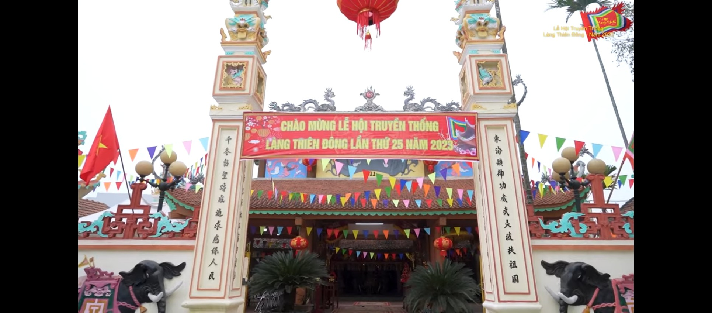
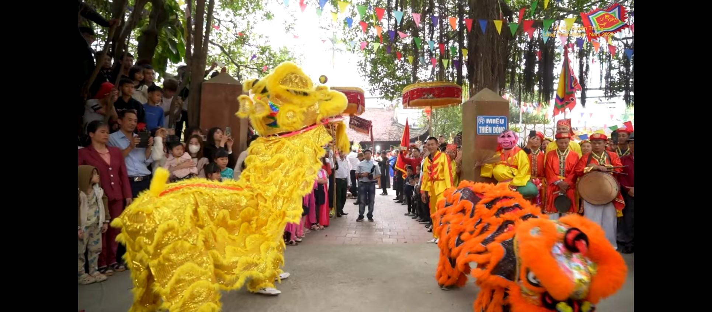

Thôn Thiên Đông là một thôn thuộc xã Mỹ Hưng, huyện Thanh Oai, tỉnh Hà Nội, Việt Nam. Với diện tích khoảng 1,67 km², thôn có 220 hộ dân, tổng số dân khoảng 900 người. Thôn Thiên Đông nằm trong khu vực vùng đồng bằng sông Hồng, cách trung tâm Hà Nội khoảng 30 km về phía tây nam. Thôn có địa hình phẳng, độ cao trung bình khoảng 12 mét so với mực nước biển. Thôn có một số con đường lớn như đường quốc lộ 21B và đường tỉnh lộ 421, giúp kết nối với các khu vực lân cận. Thôn Thiên Đông là một nơi có nền kinh tế chủ yếu là nông nghiệp, với một số sản phẩm chính như lúa gạo, rau củ quả và thủy sản. Thôn cũng có một số cơ sở sản xuất và thương mại nhỏ,về tín ngưỡng làng có 2 tôn giáo chính là phật giáo và thiên chúa giáo.

2 .Đình Làng Thiên Đông

Ảnh đình làng thôn Thiên Đông
Ngôi đình ở thôn Thiên Đông, xã Mỹ Hưng, huyện Thanh Oai, thành phố Hà Nội, cạnh ngôi miếu ở phía Tây Nam của làng. Đình có niên đại 1857, thờ Đông Hải Đại Vương, họ Nguyễn tên Phục, tiến sĩ đời Lê Nhân Tông (1442-1459) và đã giữ nhiều trọng trách tại triều. Ông bị tội oan dưới đời vua Lê Thánh Tông. Sau khi chết được rửa oan và sắc phong Đông Hải Đại Vương. Tòa đại đình gồm 5 gian 2 dĩ, kết cấu giá chiêng, kết hợp chồng rường, phần câu đầu có trụ đỡ và đấu đỡ. Các hiệp thợ làm đình đã tạo nhiều họa tiết hoa lá cách điệu rất điêu luyện, phong phú. Tòa đại bái của đình Thiên Đông còn lưu giữ khá nguyên vẹn những bức cốn quý, thể hiện các đề tài tứ linh, tứ quý, những con vật, những cây lá.
3. Miếu Làng Thiên Đông

Ảnh miếu làng thôn Thiên Dông
Miếu ở thôn Thiên Đông, xã Mỹ Hưng, huyện Thanh Oai, thành phố Hà Nội. Miếu được xây dựng từ thời Lê, nằm ở phía Tây Nam ở làng, cạnh đình Thiên Đông. Miếu trùng tu nhiều lần, lần cuối là vào năm 1887.
Đối tượng suy tôn
Miếu thờ Đông Hải Đại Vương, họ Nguyễn tên Phục, tiến sĩ đời Lê Nhân Tông (1442-1459) và đã giữ nhiều trọng trách tại triều. Ông bị tội oan dưới đời vua Lê Thánh Tông, và sau được nhà vua sắc phong Đông Hải Đại Vương và sai dân lập miếu thờ.
Kiến trúc
Miếu kiến trúc theo kiểu chữ Đinh, gồm đại bái và hậu cung. Tòa đại bái có đường gờ đắp nổi, đầu rồng riêng biệt. Ngôi hậu cung đã được tu sửa vào năm Thành Thái. Cũng như ngôi đình, ngôi miếu cũng được chạm khắc rất điêu luyện, phong phú.Miếu là nơi lưu trữ văn bản ngọc phả, sắc phong và nhiều hiện vật quý hiếm của cả 2 di tích.